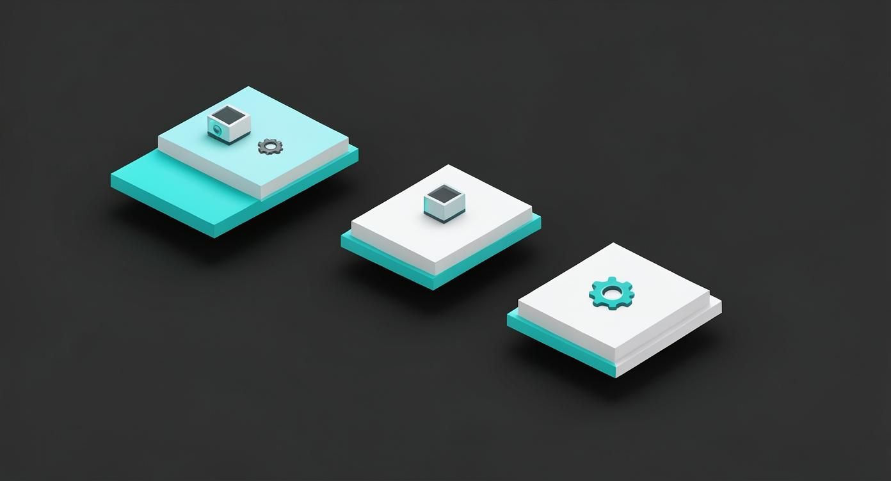

Product Development Kya Hai? Stages, Types aur Best Practices ki Poori Guide
किसी भी सॉफ्टवेयर या डिजिटल प्रोडक्ट के पीछे एक लंबा क्रम होता है। किसी ने सोचा कि "यह चीज़ होनी चाहिए", फिर उस सोच को माँग में बदला गया, फिर उसे बनाया गया, फिर टेस्ट किया गया, और फिर लॉन्च करके सुधारा गया। जब यह क्रम साफ होता है, तो टीम का समय बचता है और ग्राहक को वही मिलता है जिसका वादा किया गया था। जब यह क्रम टूट जाता है, तो हर हफ्ते नई दिशा बनती है और काम बढ़ता ही जाता है।
इस आर्टिकल में मैं product development को शुरुआत से अंत तक एक क्रम में समझाऊँगा — हर चरण का सवाल क्या है, वहाँ क्या दस्तावेज़ बनते हैं, कौन सी गलती सबसे महंगी पड़ती है, और छोटी टीम इसे अपने हिसाब से कैसे सरल बना सकती है। साथ में सर्विस कंपनी के लिए काम आने वाली practical बातें भी रखूँगा, क्योंकि वहाँ एक साथ कई ग्राहक प्रोजेक्ट चलते हैं।
छोटा जवाब: Product development का मतलब है एक सोच को ऐसे प्रोडक्ट में बदलना जिसका कोई ग्राहक उपयोग करे और जिसकी कीमत वसूल हो। इसके पाँच मुख्य चरण हैं — discovery, definition, design, build और launch। हर चरण का एक साफ सवाल होता है और हर चरण के बाद एक छोटा फैसला, जिसे लिखकर रखा जाए। सबसे बड़ी गलती चरणों को छोड़कर सीधे बनाना शुरू कर देना है।
Product development और project development में फर्क
यह फर्क पहले साफ कर लेना ज़रूरी है, क्योंकि दोनों शब्द एक-दूसरे की जगह इस्तेमाल होते हैं और इसी से पूरी योजना गड़बड़ होती है। Project development एक तय काम को तय समय में पूरा करने की बात है। Product development उस चीज़ को बाज़ार में टिकाने की बात है, जिसका कोई अंत तय नहीं होता।
| पहलू | Project | Product |
|---|---|---|
| लक्ष्य | तय दायरा, तय समय में पूरा करना | ग्राहक की समस्या हल करते रहना |
| समाप्ति | Delivery के बाद खत्म | लॉन्च के बाद शुरू |
| सफलता | समय, बजट, दायरे पर | उपयोग, रिटेंशन, राजस्व पर |
| फैसले | शुरुआत में तय | लगातार बदलते हैं |
| टीम | अस्थायी | लंबे समय तक साथ |
व्यवहार में ज़्यादातर कंपनियाँ दोनों करती हैं। एक सर्विस कंपनी ग्राहक के लिए project चलाती है, पर वही काम बार-बार आए तो उसका product बन जाता है। सवाल यह नहीं कि कौन सा तरीका सही है, सवाल यह है कि आप किस चीज़ को लंबे समय तक ज़िंदा रखना चाहते हैं।
चरण 1: Discovery — सही समस्या चुनना
पहला चरण सबसे सस्ता और सबसे ज़्यादा नज़रअंदाज़ किया जाने वाला है। यहाँ आपको यह तय करना है कि किस समस्या को हल करना है, किसके लिए, और क्यों अभी। इसमें user interviews, मौजूदा डेटा, support tickets, बिक्री टीम की बातें और प्रतिस्पर्धियों का अध्ययन शामिल है।
इस चरण में सबसे उपयोगी सवाल यह होता है — "आज लोग यह काम कैसे कर रहे हैं?" जवाब अक्सर चौंकाने वाला होता है। लोग Excel में जुगाड़ कर रहे होते हैं, WhatsApp पर फोटो भेज रहे होते हैं, या तीन अलग tools में एक ही चीज़ दोबारा भर रहे होते हैं। असली opportunity अक्सर उसी जुगाड़ में छिपी होती है।
चरण 2: Definition — दायरा साफ लिखना
Discovery के बाद आपको यह लिखना है कि पहले version में क्या होगा और — यह ज़्यादा ज़रूरी है — क्या नहीं होगा। इस दस्तावेज़ को आप product brief, PRD या एक पेज का scope note कुछ भी कह सकते हैं। नाम मायने नहीं रखता, साफ लिखा होना मायने रखता है।
एक अच्छे brief में पाँच चीज़ें होती हैं: किसके लिए बना है, कौन सी समस्या हल हो रही है, सफलता कैसे नापी जाएगी, पहले version में क्या आएगा, और क्या जान-बूझकर बाहर रखा गया है। आखिरी बिंदु सबसे कम लिखा जाता है और सबसे ज़्यादा झगड़ा वही कराता है।
| Brief का हिस्सा | उदाहरण |
|---|---|
| किसके लिए | छोटे रिटेल स्टोर के मालिक, जो रोज़ 50–200 ऑर्डर संभालते हैं |
| समस्या | स्टॉक का हिसाब Excel में है, इसलिए overselling हो जाती है |
| सफलता का मापदंड | overselling 80% घटे, हर दिन 10 मिनट से कम में स्टॉक अपडेट |
| पहला version | स्टॉक अपडेट, कम स्टॉक अलर्ट, ऑर्डर के साथ जोड़ना |
| बाहर क्या | मल्टी-वेयरहाउस, सप्लायर पोर्टल, अकाउंटिंग इंटीग्रेशन |
चरण 3: Design — तस्वीर और तकनीक दोनों
Design को सिर्फ रंग-रूप न समझें। यहाँ दो चीज़ें साथ तय होती हैं — उपयोगकर्ता का अनुभव कैसा होगा, और तकनीक उसे कैसे सहारा देगी। दोनों को एक साथ देखना ज़रूरी है, वरना सुंदर screen के पीछे ऐसा ढाँचा बन जाता है जो दूसरे version में टूट जाता है।
इस चरण में wireframes, user flow और एक छोटा prototype बनता है। Prototype का मकसद खूबसूरती नहीं, बल्कि यह जाँचना है कि लोग screen देखकर समझ पा रहे हैं या नहीं। पाँच लोगों को prototype दिखाने में दो घंटे लगते हैं और अक्सर एक बड़ी गलती पकड़ में आ जाती है, जिसे बाद में ठीक करने में दो हफ्ते लगते।

चरण 4: Build — छोटे टुकड़ों में, हर हफ्ते दिखने लायक
बनाने का चरण सबसे लंबा होता है और यहीं सबसे ज़्यादा समय बर्बाद होता है। दो आदतें बहुत फर्क डालती हैं। पहली — काम को दो हफ्ते के छोटे टुकड़ों में बाँटें और हर टुकड़े के अंत में कुछ दिखने लायक हो। दूसरी — हर टुकड़े के बाद ग्राहक या उसका प्रतिनिधि उसे देखे, भले अधूरा हो।
पहली आदत से आपको जल्दी पता चलता है कि कुछ गलत दिशा में जा रहा है। दूसरी आदत से ग्राहक का भरोसा बना रहता है, क्योंकि उसे हर दो हफ्ते में कुछ दिखता है — तीन महीने के सन्नाटे के बाद एक झटके में कुछ नहीं।
इस चरण में तीन चीज़ें लिखी रहनी चाहिए: कौन सा काम किस पर निर्भर है, क्या पहले बनना ज़रूरी है, और किस चीज़ को बाद में भी जोड़ा जा सकता है। जब यह साफ होता है, तो "सब कुछ एक साथ" की गलती कम होती है और launch की तारीख भी टिकती है।
चरण 5: Launch — पहला दिन, और उसके बाद
बहुत सी टीमें launch को अंत मान लेती हैं। असल में launch पहला दिन है, आखिरी नहीं। लॉन्च पर तीन चीज़ें ज़रूरी हैं — कुछ लोग जो इसे सबसे पहले इस्तेमाल करेंगे, एक तरीका जिससे आप देख सकें कि कहाँ अटक रहे हैं, और एक साफ रास्ता जिससे वे अपनी परेशानी बता सकें।
इसके बाद का काम सबसे मज़ेदार और सबसे कम माने जाने वाला है — सुनना। कौन सा feature कोई इस्तेमाल नहीं कर रहा? कहाँ लोग गलती कर रहे हैं? कौन सी शिकायत बार-बार आ रही है? पहले महीने का डेटा अक्सर उन धारणाओं को तोड़ता है जिन पर पूरी योजना बनी थी।
Product development के प्रकार
हर प्रोडक्ट एक ही तरीके से नहीं बनता। किस प्रकार का काम है, इससे चरणों का वज़न बदल जाता है।
| प्रकार | मतलब | सबसे ज़्यादा ध्यान कहाँ |
|---|---|---|
| नया प्रोडक्ट | शून्य से बाज़ार में | Discovery और scope |
| मौजूदा प्रोडक्ट में सुधार | नए feature या बदलाव | Design और testing |
| Platform या re-architecture | अंदरूनी ढाँचा बदलना | तकनीकी योजना और migration |
| Custom / client project | ग्राहक के लिए बनाया गया | Requirements और sign-off |
| SaaS / subscription | एक ही प्रोडक्ट, कई ग्राहक | Retention और लगातार सुधार |
सर्विस कंपनी में सबसे आम चौथा प्रकार होता है, और उसकी अपनी दिक्कतें हैं। वहाँ समस्या अक्सर तकनीक नहीं, बल्कि यह होती है कि ग्राहक हर हफ्ते अपनी माँग बदलता है। इसीलिए वहाँ scope note लिखना सबसे ज़्यादा ज़रूरी हो जाता है — लिखा हुआ ही "यह पहले version में आएगा, वह दूसरे में" का आधार बनता है।
वे best practices जो सच में काम करती हैं
छोटा scope, जल्दी दिखने वाला नतीजा। लंबे plan से बेहतर है छोटा plan जो हर दो हफ्ते में कुछ दिखाए। इससे टीम का मनोबल बना रहता है और गलती जल्दी पकड़ में आती है।
हर फैसला लिख कर रखें। "हमने यह सोचा था कि..." से बचने का एक ही तरीका है — तारीख, फैसला और उसका कारण लिखना। छह महीने बाद यही लिखा हुआ सबसे काम का दस्तावेज़ बन जाता है।
Definition of done तय करें। किसी काम का "पूरा" होना तभी मानें जब तय शर्तें पूरी हों — code review, test, documentation और deploy। बिना इसके हर काम 90% पर अटका रहता है।
एक व्यक्ति हर चीज़ का मालिक हो। हर चरण का एक नाम तय करें। जब ज़िम्मेदारी कई लोगों में बँटी होती है, तो अक्सर कोई नहीं होता।
मापदंड पहले, तारीख बाद में। "जल्दी लॉन्च" अच्छा लक्ष्य नहीं है। "इस महीने के अंत तक ऐसा version जिसमें X काम करता हो" बेहतर लक्ष्य है, क्योंकि उसमें यह भी तय है कि क्या छोड़ा जा सकता है।
पाँच गलतियाँ जो समय और पैसा दोनों खाती हैं
पहली — requirements बिना लिखे काम शुरू करना। दूसरी — हर नई माँग को "बस छोटा सा बदलाव" मानकर जोड़ते जाना, जिससे scope चुपचाप दोगुना हो जाता है। तीसरी — testing को अंत में रखना। चौथी — launch के बाद सुनना बंद कर देना। पाँचवीं — एक ही साथ बहुत सारे बदलाव लाना, जिससे पता ही नहीं चलता कि किस बदलाव से क्या हुआ।
इनमें सबसे महंगी दूसरी है, क्योंकि वह दिखती नहीं। हर "छोटा सा बदलाव" अलग से उचित लगता है, पर महीने के अंत में देखते हैं कि असली काम अभी शुरू ही नहीं हुआ। इसका इलाज एक साधारण आदत है — हर नई माँग को लिखें और हर दो हफ्ते में एक बार उन सबको देखकर तय करें कि क्या अगले version में जाएगा।
छोटी टीम इसे कैसे सरल बनाए
अगर आपकी टीम तीन-चार लोगों की है, तो आपको भारी process की ज़रूरत नहीं। तीन चीज़ें काफी हैं। एक — एक पेज का brief जिसमें समस्या, सफलता का मापदंड और बाहर रखी चीज़ें लिखी हों। दो — दो हफ्ते का एक हल्का plan जिसमें हर टुकड़े का मालिक हो। तीन — हर हफ्ते 30 मिनट की बैठक जिसमें सिर्फ तीन सवाल पूछे जाएँ: क्या पूरा हुआ, क्या अटका है, और आगे क्या।
बड़ी कंपनियों के लिए बने tools और templates छोटी टीम को धीमा कर देते हैं। उन्हें अपनाने से पहले देखें कि वे कौन सी समस्या हल करते हैं। अगर वह समस्या आपकी टीम में है ही नहीं, तो वह tool आपका समय खाएगा।
AI आज इस process में कहाँ काम आता है
AI product development को बदल नहीं रहा, पर कुछ हिस्से तेज़ कर रहा है। Discovery में user interviews के नोट्स को थीम में बाँटना, brief का पहला draft बनाना, test cases की सूची बनाना, और documentation लिखना — ये सब अब पहले से तेज़ हो गए हैं।
पर एक बात का ध्यान रखें। AI जो चीज़ नहीं कर सकता, वह है यह तय करना कि किस समस्या को हल करना ज़रूरी है। वह आपके ग्राहक से बात नहीं करेगा और उसकी परेशानी नहीं समझेगा। इसलिए AI को सहायक मानें, फैसले लेने वाला नहीं।
मैंने इन चरणों से क्या सीखा
सबसे बड़ी सीख यह रही कि सबसे ज़्यादा फायदा brief लिखने से होता है, code लिखने से नहीं। जिस प्रोजेक्ट में हमने शुरुआत में एक पेज पर लिख दिया कि किसके लिए बना रहे हैं और क्या नहीं बना रहे, वहाँ बाद में झगड़े बहुत कम हुए। जहाँ यह नहीं लिखा, वहाँ हर महीने वही बहस लौटकर आई।
दूसरी सीख — "पहले version में क्या नहीं" वाली लाइन सबसे कठिन होती है, क्योंकि वह किसी को नाराज़ करती है। पर वही लाइन प्रोजेक्ट को समय पर पहुँचाती है। मैंने अब इसे बैठक में सबके सामने पढ़ने की आदत डाल ली है।
तीसरी सीख — launch के बाद का पहला महीना planning के किसी महीने से ज़्यादा सिखाता है। असली users वे सवाल पूछते हैं जो किसी बैठक में नहीं उठते, और उन्हीं सवालों से अगला version बनता है।
अक्सर पूछे जाने वाले सवाल
Product development में सबसे ज़्यादा समय किस चरण में जाता है?
आम तौर पर build में, पर सबसे ज़्यादा समय बर्बाद definition और बदलती माँगों में होता है। अगर शुरुआत में scope साफ लिखा हो, तो build का समय काफी हद तक अनुमान लगाया जा सकता है।
क्या हर प्रोडक्ट को पाँचों चरण चाहिए?
ज़रूरी नहीं। छोटे बदलाव में discovery हल्की हो सकती है, और किसी internal tool में launch का चरण सीधा हो सकता है। पर definition और testing छोड़ने की कीमत बाद में ज़्यादा चुकानी पड़ती है।
MVP और पहला version एक ही चीज़ है?
नहीं। MVP का मकसद सीखना होता है — कम से कम काम करने वाला ढाँचा जिससे पता चले कि लोग इसे इस्तेमाल करेंगे या नहीं। पहला version बेचने लायक होता है। दोनों अलग लक्ष्य हैं और दोनों की अलग योजना बनती है।
ग्राहक के लिए बने प्रोडक्ट में सबसे बड़ी दिक्कत क्या होती है?
बदलती माँगें और अस्पष्ट sign-off। इलाज सीधा है — हर चरण की स्वीकृति लिखित रखें, और हर नई माँग को समय और कीमत के साथ दिखाएँ। इससे बातचीत तथ्यों पर आ जाती है।
क्या AI पूरा product development कर सकता है?
नहीं। AI लिखने, test cases बनाने और documentation में मदद कर सकता है, पर ग्राहक की समस्या समझना, priority तय करना और ज़िम्मेदारी लेना इंसान का काम है। AI की गति तभी काम आती है जब दिशा साफ हो।
अगर आप अपनी टीम के साथ यह क्रम लागू करना चाहते हैं, तो Proof of Concept की गाइड और event-driven architecture वाला आर्टिकल आगे काम आएँगे। शुरुआत से पढ़ना है तो Basic Computer Fundamentals के नोट्स देख लें।
हर टीम का संदर्भ अलग होता है — इन चरणों को अपने प्रोजेक्ट के आकार और जोखिम के हिसाब से हल्का या कड़ा रखें।